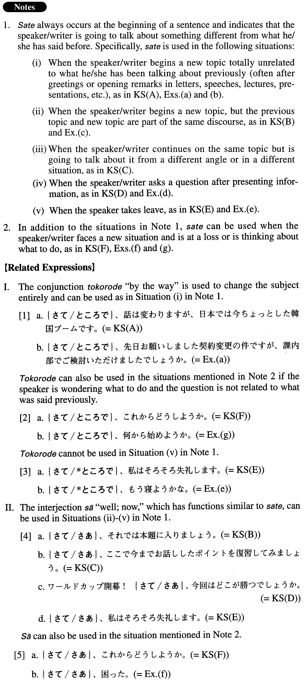

さて (A. 543)
- (ksa).
- さて、私はそろそろ失礼します。
- Well, I should be going now.
- (ksb).
- さて、話は変わりますが、日本では今ちょっとした韓国ブームです。
- Now, on another matter, Japan is undergoing quite a Korea boom at this time.
- (ksc).
- さて、それでは本題に入りましょう。
- Now I'm going to talk about the main topic.
- (ksd).
- さて、ここで今までお話ししたポイントを復習してみましょう。
- Now, let's review the points I have discussed so far.
- (kse).
- ワールドカップ開幕！さて、今回はどこが勝つでしょうか。
- The World Cup has begun! So, which country's going to win this time?
- (ksf).
- さて、これからどうしようか。
- Well, what shall we do now (literally: from now)?
- (a).
- さて、先日お願いしました契約変更の件ですが、課内部でご検討いただけましたでしょうか。
- Now, (I'd like to talk) about the contract change I requested the other day. Did you have a chance to discuss it within your department?
- (b).
- さて、前回の講義の続きですが、覚えていますか。
- Now, I'm going to continue where we left off in the previous lecture. Do you remember (what we covered before)?
- (c).
- さて、次はスポーツです。
- Now, let's turn to sports. [TV/radio news]
- (d).
- ここに3枚のポートレートがあります。さて、吉永さんはどれでしょう。
- Here are three portraits. So, which one is Ms. Yoshinaga?
- (e).
- さて、もう寝ようかな。
- Well, I guess I'll go to bed now.
- (f).
- さて、困った。
- Well, I'm in trouble.
- (g).
- さて、何から始めようか。
- So, what shall we begin with?
